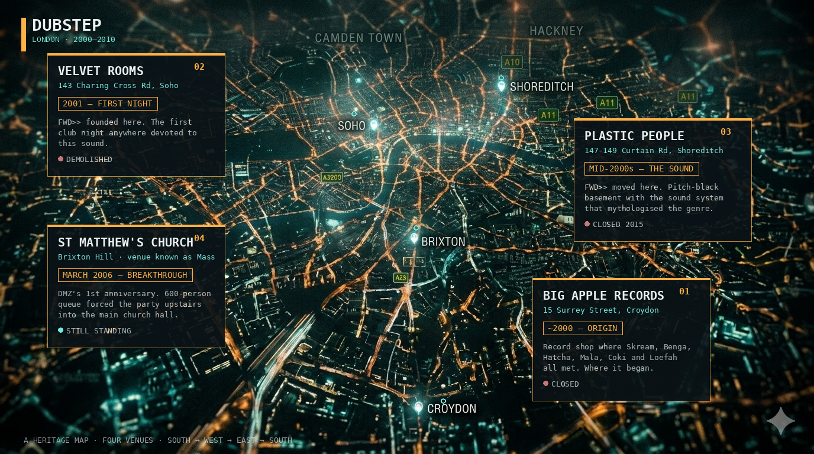

冥想低音的重量：伦敦 Dubstep
Dubstep 首先是一个伦敦的故事，然后才是其他的一切。在 Skrillex 之前，在体育馆规模的 bass drop 和汽车广告之前，在 "brostep" 这个让原教旨主义者皱眉的词出现之前——它只是几家唱片店、一个海盗电台，以及几个汗津津的地下室，一百来个穿着连帽衫的人盯着 DJ 点头。就这样。这就是那个场景的全部。
南伦敦，2000 年代初：尚未命名的声音
地理位置很重要。Dubstep 诞生于南伦敦——具体来说是 Croydon、Norwood 及周边郊区，位于城市更光鲜那一半的对岸。正如作家 Dan Hancox 曾说过的，南伦敦在两百年前的地图上几乎不存在；它是伦敦更年轻、更少出现在明信片上的那一半。
从音乐血统上看，它连接着 UK garage、2-step、jungle、drum and bass，以及牙买加 dub sound system 文化——Brixton 雷鬼唱片店那种次低频的重量，直接喂养了接下来发生的一切。1999 到 2000 年前后，像 El-B、Horsepower Productions、Zed Bias、Oris Jay 这样的制作人开始把一些奇怪、更阴暗、半速的 garage 实验放在白标唱片的 B 面。这些曲目对 garage 舞池来说太怪了，对 drum and bass 来说又太 garage 了。它们需要一个归属。
"Dubstep" 这个词本身当时还不存在。一般认为是 Tempa Recordings 的 Neil Jolliffe 在 2002 年前后造了这个词——之前，人们要么叫它 "the Forward>> sound"，要么叫 "dark garage"。
Big Apple Records，Croydon：制作人相遇的地方
如果你想找一个精神层面的起点，那就是 Croydon 的 Surrey Street 上的一家唱片店。Big Apple Records 最初卖的是 hardcore、techno、house 和 garage，但到了 2000 年代初，它已经非正式地变成了整整一代待出道制作人的大本营。
Big Apple 现在已经不在了，大约在 2000 年代中期关门。但它的重要性怎么强调都不过分。它是这些制作人真正互相认识的地方。Dubstep 不是从一个已经存在的场景中冒出来的；它是从一群朋友中诞生的，而这群朋友在 Croydon 的同一家唱片店里打工、闲逛或买碟。
FWD>> 在 Velvet Rooms，Soho：第一个真正的家
2001 年，推广团队 Ammunition 在 Soho 的 Velvet Rooms 办了一个叫 Forward>>（通常写作 FWD>>）的夜场。这是全世界第一个专门献给这种新兴暗黑 garage 声音的俱乐部之夜。最初的阵容包括 Hatcha、Youngsta、Kode9、Zed Bias、Oris Jay、DJ Slimzee 等人，MC 是 Crazy D——实际上就是 dubstep 的奠基者们，放着还没发行的唱片。
FWD>> 同时也在东伦敦的海盗电台 Rinse FM 上有一个广播节目，由 Kode9 主持。有一张旧的网络传单把这种声音描述为"能让你胸腔共振的低音"，这大概是最诚实的一则夜店文案。到了 2003 年，DJ Hatcha 利用 FWD>> 的唱机和 Rinse FM 的电波推进一个新的、精简的、极简的方向——他只播放 10 英寸 dubplate，曲目全部来自一个由 Croydon 年轻人组成的小圈子。正是在这次转向中，现在意义上的 "dubstep" 才真正定型。
Plastic People，Shoreditch：传奇的地下室
2000 年代中期，FWD>> 搬到了东伦敦 Shoreditch 区 Curtain Road 上的 Plastic People——一个漆黑狭小的地下室。如果 dubstep 有一个精神故乡，就是这里。
Plastic People 的老板是 Ade Fakile，它的标志性特征是一种近乎无情的杂食哲学——还有那个所有人都记得的部分：一间比一套公寓大不了多少的房间里装着一套发烧级音响。人们形容进去的感觉就像待在喇叭里面。灯光故意开得很暗，几乎是关着的。没有镜子，没有 VIP 区，除了 DJ 没什么可看的。常客会说他们会找到舞池里一块暗角，就那样站着、点头，一站一整晚。那个流传下来的段子是：整个房间都是穿连帽衫的人盯着 DJ 台——而且在很长一段时间里，真就是这样。
但让它成为传奇的是音响系统。围绕次低频构建的 dubstep 曲目在大多数俱乐部的音响上根本出不来；在 Plastic People，它们物理上真的能出来。你在听见它之前就感觉到它了。当 Skream 的 "Midnight Request Line" 或 Benga 与 Coki 的 "Night" 在那个房间里 drop 下去的时候，低频变成了一种集体的身体事件。
这家店在 2015 年 1 月关门，被反复地、名副其实地悼念了。
DMZ 在 Mass，Brixton
第三个不可或缺的 venue 是 DMZ。这是由 Digital Mystikz、Loefah 以及 MC Sgt Pokes 共同主办的双月派对，2005 年 3 月开张。派对在 Mass 举办——Mass 是 St Matthew's Church 里面的一个俱乐部群，那是一座位于 Brixton 正中心的、1820 年代建成的二级保护登录教堂。具体来说，DMZ 发生在楼下一个叫 "3rd Base" 的空间：一个 400 人容量的地下室，低天花板，挂着迷彩网，一套震得人肋骨发麻的音响。传单上的口号是 "come meditate on bass weight"（来冥想低音的重量），基本上告诉了你那里的一切氛围。
Brixton 是一个有深厚雷鬼和 Windrush 移民根源的社区，几十年来 sound system 文化一直从店铺和车里向外轰鸣。DMZ 把 dubstep 重新插回了这条血脉。它不是在追赶潮流；它是在追求重。Mala 曾经谈到，他在台上能看见一段 bass line 从前排到后排，以一种明显的延迟波向后扩散穿过人群——低频确实要花更长的时间，才能穿透离音响更远的那些身体。
DMZ 的一周年派对——2006 年 3 月——是整个场景翻过临界点的那一刻。3rd Base 已经满了，600 人的队伍在 Brixton 的夜色里排到街上。将近午夜的时候，Mala 拿起麦克风，宣布派对搬到楼上 Mass 的大厅——那是一个空旷的大房间，DJ 在一个高起的布道坛上放片，两侧是石柱，下方是摇摆的"会众"。这一夜被反复认定为 dubstep 历史上那个关键时刻——一个地下室的小众声音意识到，它拥有一群已经塞不进地下室的观众。
Mass 在 2013 已经结束活动了，教堂又变回了教堂，现在官方网站上的时间线只是简单藏起来一句：此段时间曾出租给 Mass night club。
然后
到了 2007 到 2008 年，dubstep 已经出圈了。Skream 的 "Midnight Request Line" 和 Benga 与 Coki 的 "Night" 成了跨界热门。La Roux 请 Skream 去 remix 了 "In for the Kill"。Britney Spears 在一首单曲里用上了 wobble bass。Katy B 和 Magnetic Man 冲进了英国单曲榜前十。Burial 的《Untrue》获得了 Mercury 奖提名，重新定义了当这种流派不再向外扩张而是向内收敛时，它能是什么样子。
然后是美国的分支。Skrillex 和 "brostep" 那波人把 dubstep 的 bass drop 推进到中频段——扭曲、激进、吉他化——然后把它卖给了体育馆。南伦敦的那些开创者们态度客气，但显然有所保留。Skream 后来转向了 house 和 techno。Loefah 完全离开了 dubstep，创立了 Swamp81。Mala 继续经营他的 Deep Medi Musik 厂牌，并着手寻找新的 bass 传统（和 Gilles Peterson 合作的那张古巴专辑值得一听）。Kode9 的厂牌 Hyperdub 成为了过去十年里最重要的电子厂牌之一，是 Burial、Ikonika 等众多艺人的家。
FWD>> 一直办到了 2016 年。Plastic People 在 2015 年关门。Mass 也关了。那些场地现在大多是幽灵。
一张地图，如果你需要的话
如果哪天你想在伦敦走一趟地标点，大致的地图是这样的：

从 Croydon 开始，就在 Surrey Street 上曾经的 Big Apple Records 原址。往上走到 Soho，经过曾经的 Velvet Rooms，2001 年 FWD>> 在那里诞生。再往东到 Shoreditch，到 Curtain Road，到那个没有标识的地下室——Plastic People。它至今没有标识，因为一个发生在黑暗里的场景是没有蓝牌纪念的。然后再往南回到 Brixton，St Matthew's Church 依然矗立在环岛中间，你可以想象 2006 年 3 月那晚，600 个人绕着它排队，前来冥想低音的重量。
这就是 dubstep，更早、更安静、更重的那个版本：一种非常伦敦的音乐，由一小群南伦敦人在几个必须知道才找得到的房间里，通过一根海盗电台的发射塔和几套音响系统放大出来。